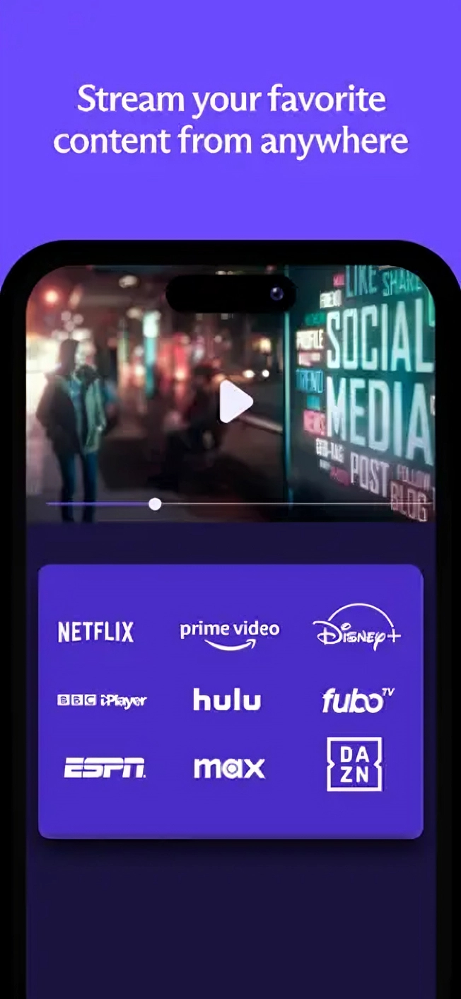

Proton VPN is the world's only free VPN app that is safe to use and respects your privacy. Proton VPN
is created by the CERN scientists behind Proton Mail - the world's largest encrypted email service. Our fast VPN offers
secure, private, encrypted, and unlimited internet access with advanced privacy and security features.
Used by
millions worldwide, Proton’s secure no-logs VPN offers 24/7 safe, private, and unlimited internet access and does not
record your browsing history, display ads, sell your data to third parties, or limit downloads.
• Access 15,000+ high speed servers across 126 countries worldwide.
• Fast VPN: high-speed server network with connections up to 10 Gbps.
• VPN Accelerator: unique technology increases Proton VPN's speeds by up to 400% for a faster browsing experience.
• Unblock access to blocked or censored content to get unlimited internet access.
• Connect up to 10 devices to the VPN at the same time.
• Ad blocker (NetShield): a DNS filtering feature that protects you from malware, blocks ads, and prevents website trackers from following you across the web.
• Stream films, sports events, and videos on any streaming service (Netflix, Hulu, Amazon Prime Video, Disney+, BBC iPlayer, etc) with our fast server network.
• File-sharing and P2P support.
• Secure Core servers protect against network-based attacks with multi-hop VPN.
• Split tunneling support allows you to select which apps go through the VPN tunnel.
1. First of all, click the Download Link button.
2. Next, click the Open button below the Download Now button.
3. After that, close the website page that you just entered.
4. Subsequently, waiting approximately 10 seconds, the words Open button will change to Next button.
5. Then, click the Next button, and close the website page that you just entered again.
6. In conclusion, you will verify captcha "I'm not a robot", so you will get the destination link that you are looking for.
NOTES: If you still have difficulty following this step by step, feel free to Direct Message on my Instagram: @furry.diary !